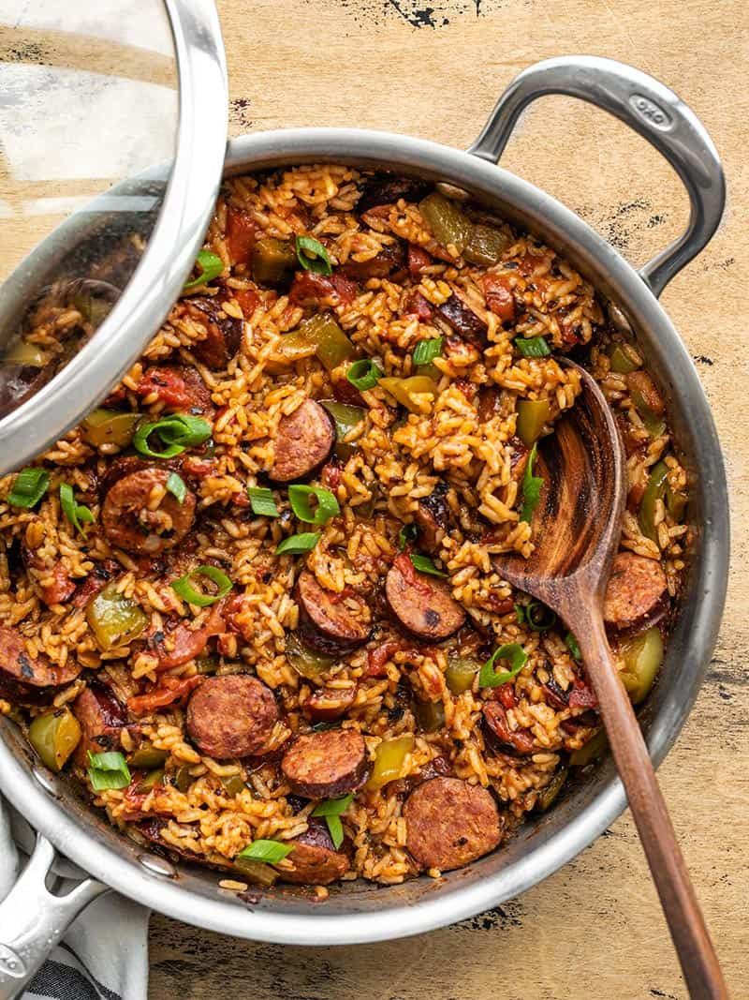

Cajun Sausage and Rice Dish

Description
This is one of my all time favorite recipes! Perfect fresh or even for leftovers all week long, its a staple in our home.
It's quick and easy to make, even by someone like me with almost zero cooking experience!
Ingredients
- 1 Package of Andouille Sausage
- 1 Tablespoon of Oil
- 2 Bell Peppers
- 4 Serrano Peppers
- 1t of Paprika
- 1/2t Oregano and Thyme
- 1/4t Garlic and Onion Powder
- 1/4t Cayenne Pepper
- 1/8t Black Pepper
- 1 Can of Diced Tomatoes
- 1 Can Kidney Beans
- 1.5 Cups of Rice
- 2 Cups of Chicken Broth
Steps
- Slice sausage and add to large skillet with oil on high heat until browned
- Dice peppers and add to skillet and saute for a few minutes
- Add spices to toast and stir to combine and cook for another 1-3 minutes
- Add tomatoes (with the juice), rice, beans, and broth and stir to combine
- Place lid on skillet and allow broth to come to boil
- Once boiling turn down heat to low-medium and cook for 20-25 minutes
- Stir to redistribute the ingredients and serve!